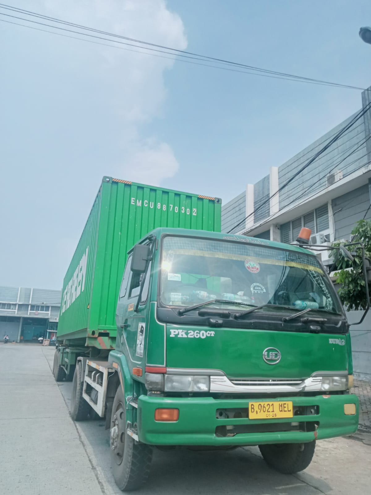
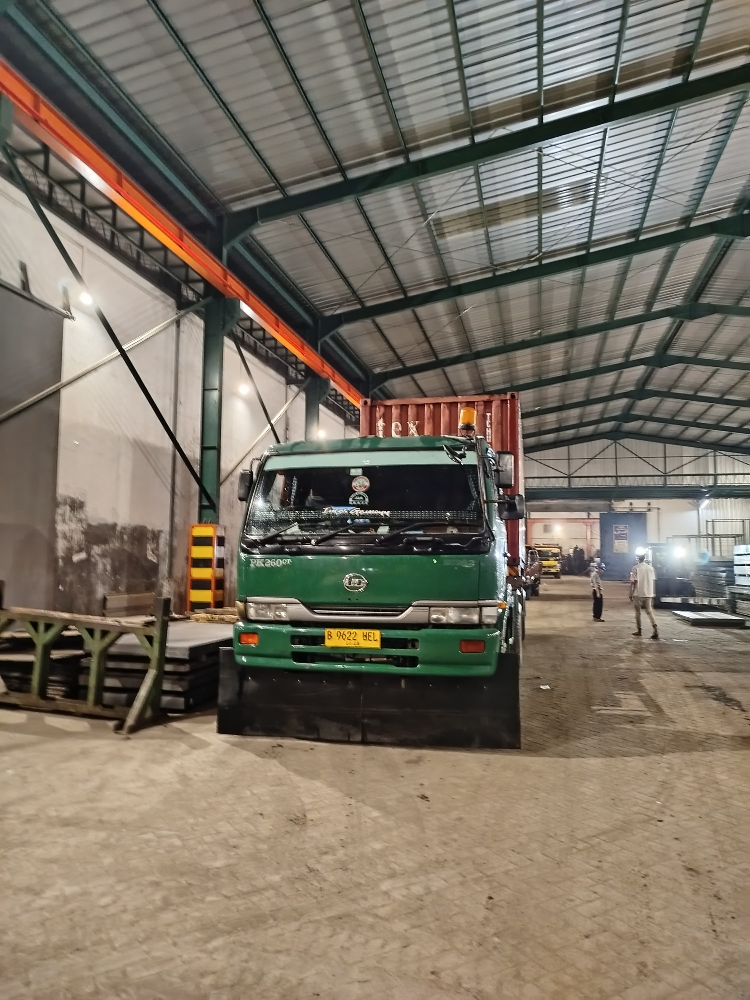
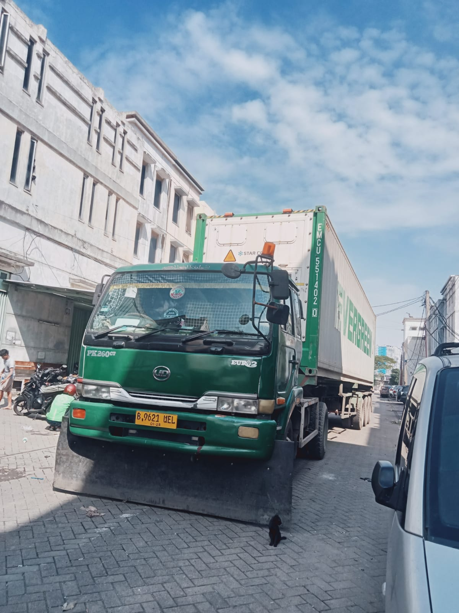
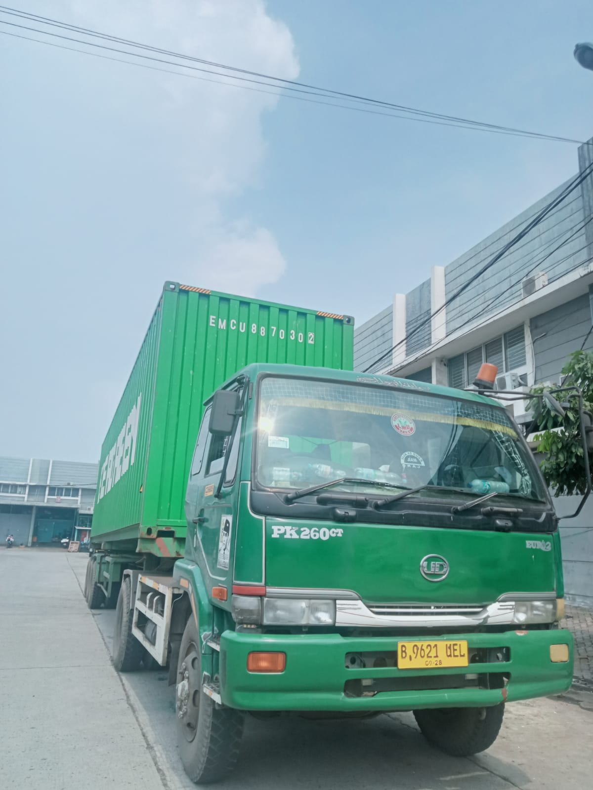
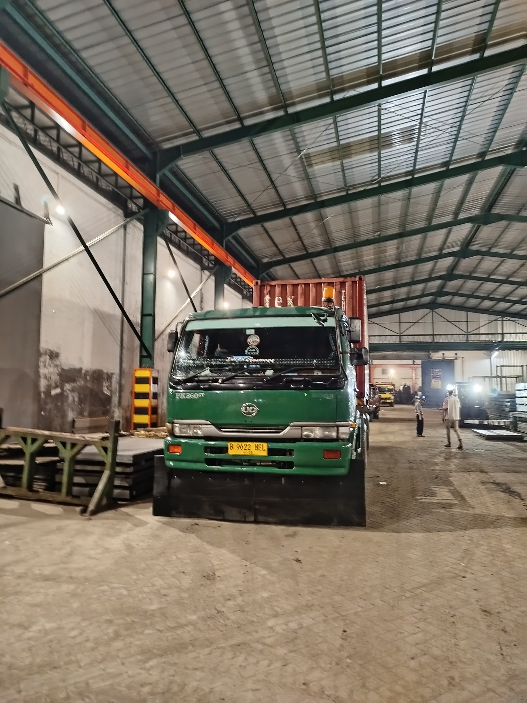
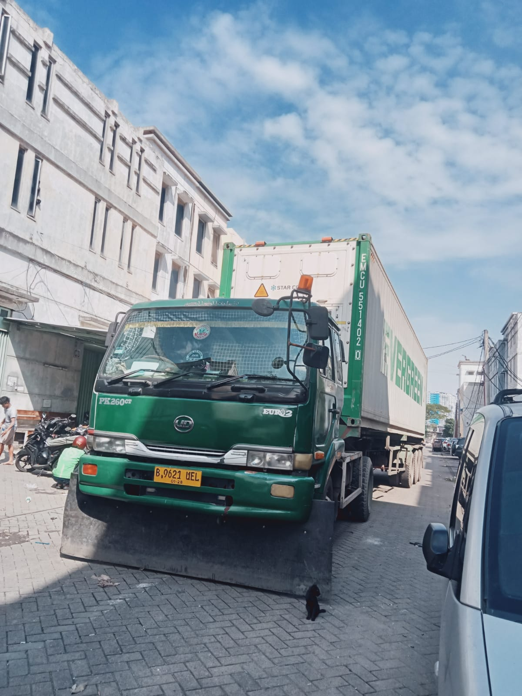
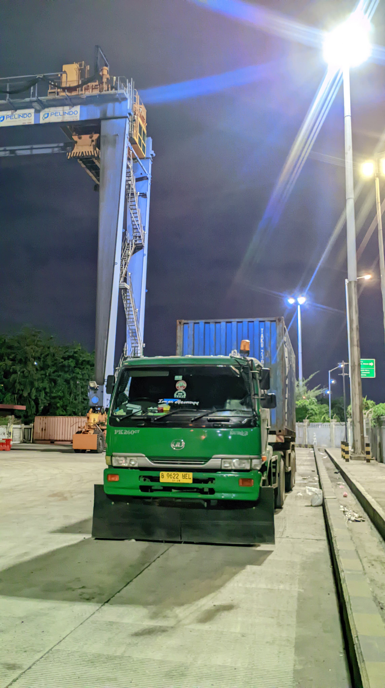
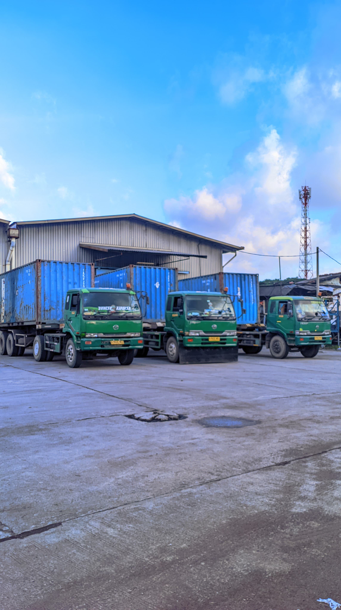
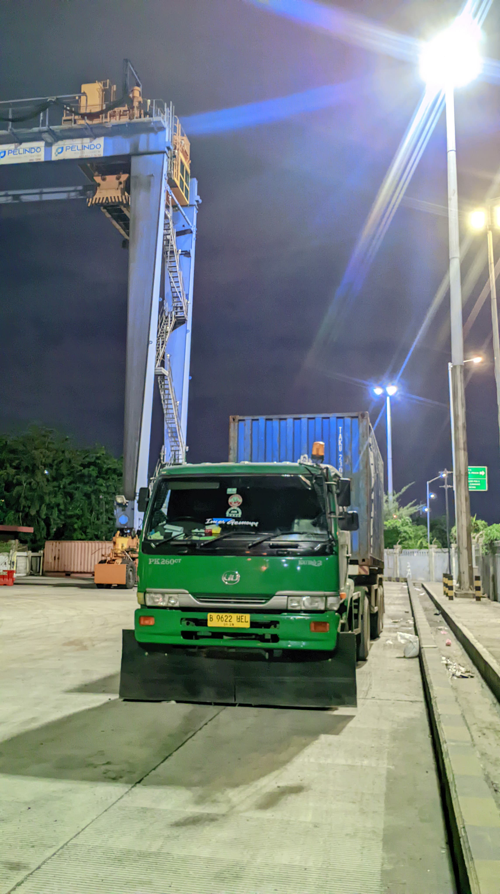
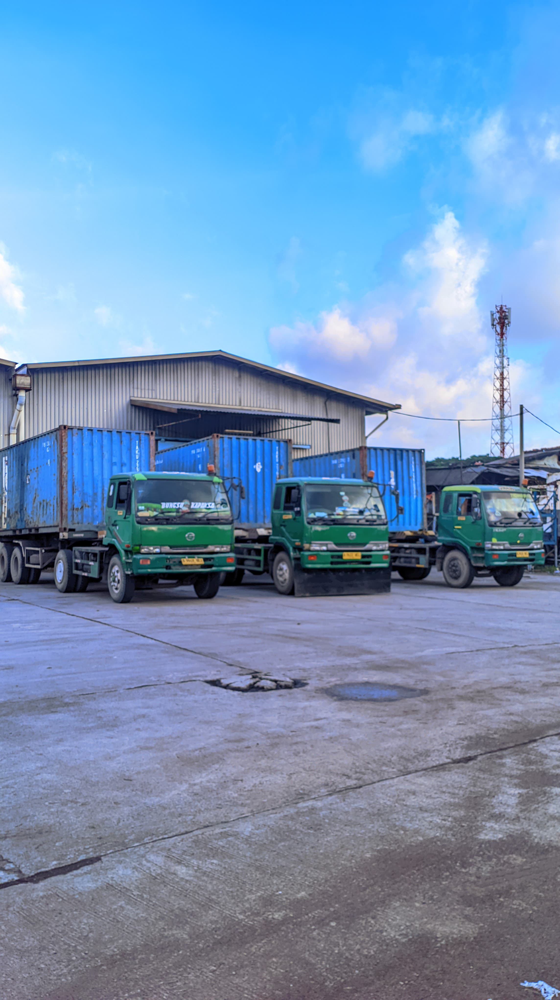

PT Trias Andalas Logistic adalah perusahaan yang bergerak di bidang jasa logistik, khususnya layanan trucking kontainer. Berdiri dengan komitmen untuk memberikan solusi pengangkutan yang efisien, aman, dan tepat waktu, kami melayani kebutuhan transportasi darat untuk kontainer dari dan menuju pelabuhan, kawasan industri, gudang, maupun lokasi distribusi lainnya. Dengan didukung armada truk yang handal dan tim profesional berpengalaman, PT Trias Andalas Logistic hadir sebagai mitra terpercaya bagi pelaku usaha di berbagai sektor industri. Fokus kami adalah memastikan setiap pengiriman dilakukan dengan standar pelayanan tinggi, mengutamakan ketepatan waktu dan keselamatan barang. Kami terus berinovasi dalam menghadirkan layanan terbaik, termasuk sistem pelacakan real-time dan manajemen logistik berbasis teknologi, guna memenuhi kebutuhan pelanggan yang terus berkembang. .
Kami menyediakan layanan pengangkutan kontainer dari dan ke pelabuhan dengan tepat waktu dan efesien. Didukung armada yang terawat dan pengemudi berpengalaman, kami memastikan proses distribusi berjalan lancar.
Layanan transportasi darat untuk pengiriman kontainer ke berbagai kota dan daerah di seluruh indonesia. Solusi ideal untuk distribusi logistik skala besar dengan jangkauan luas.
Kami melayani pengangkutan untuk berbagai jenis kontainer, baik ukuran 20 feet maupun 40 feet, dengan armada yang siap mendukung kebutuhan logistik pelanggan secara fleksibel dan andal.
 





 




Alamat: Green lake city, rukan fresh market blok c21, cipondoh kota tangerang.
Telepon1: 0857 7899 5593
Telepon2: 0812 8288 9199
Instagram: @tal_trucking